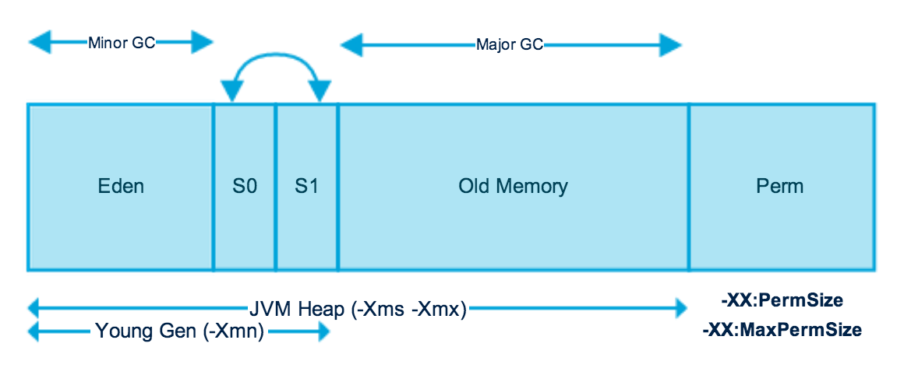

目录 [−]
本文由 ImportNew - 进林 翻译自 journaldev。
转载时对译文做了小的修改。
要了解Java垃圾收集机制，先理解JVM内存模型是非常重要的。今天我们将会了解JVM内存的各个部分、如何监控以及垃圾收集调优。
Java（JVM）内存模型

正如你从上面的图片看到的，JVM内存被分成多个独立的部分。广泛地说，JVM堆内存被分为两部分——年轻代（Young Generation）和年老代（Old Generation）。
年轻代
年轻代是所有新对象产生的地方。当年轻代内存空间被用完时，就会触发垃圾回收。这个垃圾回收叫做Minor GC。年轻代被分为3个部分——Enden区和两个Survivor区。
年轻代的几个要点：
- 大多数新建的对象都位于Eden区。
- 当Eden区被对象填满时，就会执行Minor GC。并把所有存活下来的对象转移到其中一个survivor区。
- Minor GC同样会检查存活下来的对象，如果需要会把它们转移到另一个survivor区。这样在一段时间内，总会有一个空的survivor区。
- 经过多次GC周期后，仍然存活下来的对象会被转移到年老代内存空间。通常这是在年轻代有资格提升到年老代前通过设定年龄阈值来完成的。
年老代
年老代内存里包含了长期存活的对象和经过多次Minor GC后依然存活下来的对象。通常会在年老代内存被占满时进行垃圾回收。年老代的垃圾收集叫做Major GC。 Major GC会花费更多的时间。
程序暂停事件（Stop the World Event）
所有的垃圾收集都是“Stop the World”事件，因为所有的应用线程都会停下来直到操作完成（所以叫“Stop the World”）。
因为年轻代里的对象都是一些声明周期很短的（short-lived ）对象，执行Minor GC非常快，所以应用不会受到程序暂停的影响。
由于Major GC会检查所有存活的对象，因此会花费更长的时间。应该尽量减少Major GC。因为Major GC会在垃圾回收期间让你的应用反应迟钝，所以如果你有一个需要快速响应的应用， 在频繁发生Major GC时，你会看到超时错误。
垃圾回收时间取决于垃圾回收策略。这就是为什么有必要去监控垃圾收集和对垃圾收集进行调优。从而避免要求快速响应的应用出现超时错误。
永久代（Permanent Generation）
永久代或者“Perm Gen”包含了JVM需要的应用元数据，这些元数据描述了在应用里使用的类和方法。注意，永久代不是Java堆内存的一部分。
永久代存放JVM运行时使用的类。永久代同样包含了Java SE库的类和方法。永久代的对象在full GC时进行垃圾收集。
注: Java 8中永久代不存在了。
方法区
方法区是永久代空间的一部分，并用来存储类型信息（运行时常量和静态变量）和方法代码和构造函数代码。
内存池
如果JVM支持，JVM内存管理会为创建内存池，用来为不变对象创建对象池。字符串池就是内存池类型的一个很好的例子。内存池可以属于堆或者永久代，这取决于JVM内存管理的实现。
运行时常量池
运行时常量池是每个类常量池的运行时代表。它包含了类的运行时常量和静态方法。运行时常量池是方法区的一部分。
Java栈内存
Java栈内存用于运行线程。它们包含了方法里的临时数据、对堆里其它对象引用。你可以阅读栈内存和堆内存的区别。
Java 堆内存开关
Java提供了大量的内存开关（参数），我们可以用它来设置内存大小和它们的比例。下面是一些常用的开关：
| VM 开关 | VM 开关描述 |
|---|---|
| -Xms | 设置JVM启动时堆的初始化大小。 |
| -Xmx | 设置堆最大值。 |
| -Xmn | 设置年轻代的空间大小，剩下的为老年代的空间大小。 |
| -XX:PermGen | 设置永久代内存的初始化大小。 |
| -XX:MaxPermGen | 设置永久代的最大值。 |
| -XX:SurvivorRatio | 提供Eden区和survivor区的空间比例。比如，如果年轻代的大小为10m并且VM开关是-XX:SurvivorRatio=2，那么将会保留5m内存给Eden区和每个Survivor区分配2.5m内存。默认比例是8。 |
| -XX:NewRatio | 提供年老代和年轻代的比例大小。默认值是2。 |
注： Java8中已经没有PermGen了，所以设置参数也没有了
大多数时候，上面的选项已经足够使用了。但是如果你还想了解其他的选项，那么请查看JVM选项官方网页。
Java垃圾回收
Java垃圾回收会找出没用的对象，把它从内存中移除并释放出内存给以后创建的对象使用。Java程序语言中的一个最大优点是自动垃圾回收，不像其他的程序语言那样需要手动分配和释放内存，比如C语言。
垃圾收集器是一个后台运行程序。它管理着内存中的所有对象并找出没被引用的对象。所有的这些未引用的对象都会被删除，回收它们的空间并分配给其他对象。
一个基本的垃圾回收过程涉及三个步骤：
- 标记：这是第一步。在这一步，垃圾收集器会找出哪些对象正在使用和哪些对象不在使用。
- 正常清除：垃圾收集器清会除不再使用的对象，回收它们的空间分配给其他对象。
- 压缩清除：为了提升性能，压缩清除会在删除没用的对象后，把所有存活的对象移到一起。这样可以提高分配新对象的效率。
简单标记和清除方法存在两个问题：
- 效率很低。因为大多数新建对象都会成为“没用对象”。
- 经过多次垃圾回收周期的对象很有可能在以后的周期也会存活下来。
上面简单清除方法的问题在于Java垃圾收集的分代回收的，而且在堆内存里有年轻代和年老代两个区域。我已经在上面解释了Minor GC和Major GC是怎样扫描对象，以及如何把对象从一个分代空间移到另外一个分代空间。
Java垃圾回收类型
这里有五种可以在应用里使用的垃圾回收类型。仅需要使用JVM开关就可以在我们的应用里启用垃圾回收策略。让我们一起来逐一了解：
1) Serial GC（-XX:+UseSerialGC）：Serial GC使用简单的标记、清除、压缩方法对年轻代和年老代进行垃圾回收，即Minor GC和Major GC。Serial GC在client模式（客户端模式）很有用，比如在简单的独立应用和CPU配置较低的机器。这个模式对占有内存较少的应用很管用。
2) Parallel GC（-XX:+UseParallelGC）：除了会产生N个线程来进行年轻代的垃圾收集外，Parallel GC和Serial GC几乎一样。这里的N是系统CPU的核数。我们可以使用 -XX:ParallelGCThreads=n 这个JVM选项来控制线程数量。并行垃圾收集器也叫throughput收集器。因为它使用了多CPU加快垃圾回收性能。Parallel GC在进行年老代垃圾收集时使用单线程。
3)Parallel Old GC（-XX:+UseParallelOldGC）：和Parallel GC一样。不同之处，Parallel Old GC在年轻代垃圾收集和年老代垃圾回收时都使用多线程收集。
4) 并发标记清除（CMS）收集器（-XX:+UseConcMarkSweepGC)：CMS收集器也被称为短暂停顿并发收集器。它是对年老代进行垃圾收集的。CMS收集器通过多线程并发进行垃圾回收，尽量减少垃圾收集造成的停顿。CMS收集器对年轻代进行垃圾回收使用的算法和Parallel收集器一样。这个垃圾收集器适用于不能忍受长时间停顿要求快速响应的应用。可使用 -XX:ParallelCMSThreads=n JVM选项来限制CMS收集器的线程数量。
5) G1垃圾收集器（-XX:+UseG1GC) G1（Garbage First）：垃圾收集器是在Java 7后才可以使用的特性，它的长远目标时代替CMS收集器。G1收集器是一个并行的、并发的和增量式压缩短暂停顿的垃圾收集器。G1收集器和其他的收集器运行方式不一样，不区分年轻代和年老代空间。它把堆空间划分为多个大小相等的区域。当进行垃圾收集时，它会优先收集存活对象较少的区域，因此叫“Garbage First”。你可以在Oracle Garbage-FIrst收集器文档找到更多详细信息。
Java垃圾收集监控
我们可以使用命令行和图形工具来监控监控应用垃圾回收。例如，我使用Java SE下载页中的一个demo来实验。
如果你想使用同样的应用，可以到Java SE下载页面下载JDK 7和JavaFX演示和示例。我使用的示例应用是Java2Demo.jar，它位于 jdk1.7.0_55/demo/jfc/Java2D 目录下。这只是一个可选步骤，你可以运行GC监控命令监控任何Java应用。
我打开演示应用使用的命令是：
|
|
jstat
可以使用jstat命令行工具监控JVM内存和垃圾回收。标准的JDK已经附带了jstat，所以不需要做任何额外的事情就可以得到它。
要运行jstat你需要知道应用的进程id，你可以使用 ps -eaf | grep java 命令获取进程id。
|
|
从上面知道，我的Java应用进程id是9582。现在可以运行jstat命令了，就像下面展示的一样：
|
|
jstat命令的最后一个参数是每个输出的时间间隔。每隔一秒就会打印出内存和垃圾收集数据。
让我们一起来对每一列的意义进行逐一了解：
- S0C和S1C：这一列展示了Survivor0和Survivor1区的当前大小（单位KB）。
- S0U和S1U：这一列展示了当前Survivor0和Survivor1区的使用情况（单位KB）。注意：无论任何时候，总会有一个Survivor区是空着的。
- EC和EU：这些列展示了Eden区当前空间大小和使用情况（单位KB）。注意：EU的大小一直在增大。而且只要大小接近EC时，就会触发Minor GC并且EU将会减小。
- OC和OU：这些列展示了年老代当前空间大小和当前使用情况（单位KB）。
- PC和PU：这些列展示了Perm Gen（永久代）当前空间大小和当前使用情况（单位KB）。
- YGC和YGCT：YGC这列显示了发生在年轻代的GC事件的数量。YGCT这列显示了在年轻代进行GC操作的累计时间。注意：在EU的值由于minor GC导致下降时，同一行的YGC和YGCT都会增加。
- FGC和FGCT：FGC列显示了发生Full GC事件的次数。FGCT显示了进行Full GC操作的累计时间。注意：相对于年轻代的GC使用时间，Full GC所用的时间长很多。
- GCT：这一列显示了GC操作的总累计时间。注意：总累计时间是YGCT和FGCT两列所用时间的总和（GCT=YGCT+FGCT）。
jstat的优点，我们同样可以在没有GUI的远程服务器上运行jstat。注意：我们是通过 -Xmn10m 选项来指定S0C、S1C和EC的总和为10m的。
Java VisualVM及Visual GC插件
如果你想在GUI里查看内存和GC，那么可以使用jvisualvm工具。Java VisualVM同样是JDK的一部分，所以你不需要单独去下载。
在终端运行jvisualvm命令启动Java VisualVM程序。一旦启动程序，你需要从Tools->Plugins选项安装Visual GC插件，就像下面图片展示的。
安装完Visual GC插件后，从左边栏打开应用并把视角转到Visual GC部分。你将会得到关于JVM内存和垃圾收集详情，如下图所示。
Java垃圾回收调优
Java垃圾回收调优应该是提升应用吞吐量的最后一个选择。在你发现应用由于长时间垃圾回收导致了应用性能下降、出现超时的时候，应该考虑Java垃圾收集调优。
如果你在日志里看到 java.lang.OutOfMemoryError: PermGen space错误，那么可以尝试使用 -XX:PermGen 和 -XX:MaxPermGen JVM选项去监控并增加Perm Gen内存空间。你也可以尝试使用-XX:+CMSClassUnloadingEnabled并查看使用CMS垃圾收集器的执行性能。
如果你看到了大量的Full GC操作，那么你应该尝试增大年老代的内存空间。
全面垃圾收集调优要花费大量的努力和时间，这里没有一成不变的硬性调优规则。你需要去尝试不同的选项并且对这些选项进行对比，从而找出最适合自己应用的方案。
这就是所有的Java内存模型和垃圾回收内容。希望对你理解JVM内存和垃圾收集过程有所帮助。
原文链接： journaldev 翻译： ImportNew.com - 进林
译文链接： http://www.importnew.com/14086.html